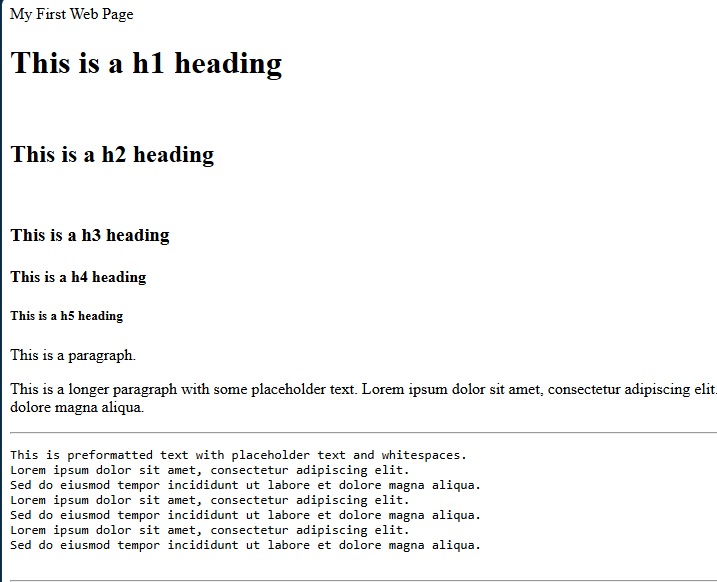

A college project where I developed my coding skills. By creating a game set in another world. I built a puzzle game A college project where I developed my coding skills. By creating a game set in another world. I built the final level of a puzzle game.A college project where I developed my coding skills. By creating a game set in another world. I built a puzzle game A college project where I developed my coding skills. By creating a game set in another world. I built the final level of a puzzle game.

This website
I learnt to code in html to make a website for my portfolio. I struggled with other software and wanted to learn a new skill, so I used a youtube tutorial series to learn the basics. Once, I was confident I could create a simple website I began working on this website. I am still learning html and improving this website as I continue to develop my skills.
A peasant's path
A Peasants Path was my first game jam. I learned a lot about game development and teamwork. I worked in a team of four to create a simple but engaging puzzle game with an interesting story prototype within a the 3-week timeframe.